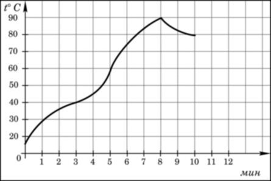
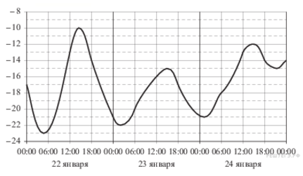

Для успешного решения задач такого типа необходимо умение анализировать графическую информацию
1. На графике показан процесс разогрева двигателя легкового автомобиля. На оси абсцисс откладывается время в минутах, прошедшее от запуска двигателя, на оси ординат — температура двигателя в градусах Цельсия. Определите по графику, сколько минут двигатель нагревался от температуры 60 °C до температуры 90 °C.
2. На рисунке показано изменение температуры воздуха на протяжении трех суток. По горизонтали указывается дата и время суток, по вертикали — значение температуры в градусах Цельсия. Определите по рисунку наибольшую температуру воздуха 22 января. Ответ дайте в градусах Цельсия.
3. На диаграмме показано распределение выплавки меди в 10 странах мира (в тысячах тонн) за 2006 год. Среди представленных стран первое место по выплавке меди занимали США, десятое место — Казахстан. Какое место занимала Индонезия?На диаграмме показано распределение выплавки меди в 10 странах мира (в тысячах тонн) за 2006 год. Среди представленных стран первое место по выплавке меди занимали США, десятое место — Казахстан. Какое место занимала Индонезия?